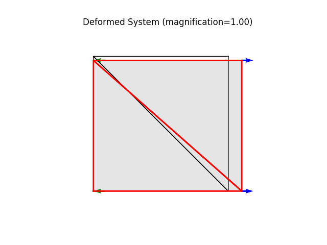

Note
Go to the end to download the full example code
A square patch made of two triangular plate elements
- Basic implementation test with applied loads.
Testing the tangent stiffness computation.
free free
^ ^
| |
3-----2 -> free
|\ b | >
| \ | >
| \ | > (w = 1.0)
| \ | >
| a \| >
0-----1 -> free
width: 10.
height: 10.
Material parameters: St. Venant-Kirchhoff, plane stress
E = 10.0
nu = 0.30
t = 1.0
Element loads:
node 0: [ 0.0, 0.0]
node 1: [ 5.0, 0.0]
node 2: [ 5.0, 0.0]
node 3: [ 0.0, 0.0]
2nd Piola-Kirchhoff stress:
S_XX = w = 1.000
S_YY = S_XY = S_YX = S_ZZ = 0.000
Green Lagrange strain:
eps_XX = (1/E) ((1.000) - (0.30)(0.000)) = 0.100
eps_YY = (1/E) ((0.000) - (0.30)(1.000)) = -0.030
eps_XY = eps_YX = 0.000
eps_ZZ = -nu * (eps_XX + eps_YY) = -0.021
Stretches:
lam_X = sqrt(1 + 2 eps_XX) = 1.095
lam_Y = sqrt(1 + 2 eps_YY) = 0.9695
Displacements:
ux = (lam_X - 1) * x, uy = (lam_Y - 1) * y
node 0: [ 0.000, 0.000 ]
node 1: [ 0.954, 0.000 ]
node 2: [ 0.954, -0.305 ]
node 3: [ 0.000, -0.305 ]
Author: Peter Mackenzie-Helnwein
from femedu.examples.Example import *
from femedu.domain.System import *
from femedu.solver.NewtonRaphsonSolver import *
from femedu.elements.LinearTriangle import *
from femedu.materials.PlaneStress import *
class ExamplePlate02(Example):
def problem(self):
params = dict(
E = 10., # Young's modulus
nu = 0.3, # Poisson's ratio
t = 1.0, # thickness of the plate
fy = 1.e30 # yield stress
)
a = 10. # length of the plate in the x-direction
b = 10. # length of the plate in the y-direction
model = System()
model.setSolver(NewtonRaphsonSolver())
nd0 = Node( 0.0, 0.0)
nd1 = Node( a, 0.0)
nd2 = Node( a, b)
nd3 = Node( 0.0, b)
nd0.fixDOF('ux', 'uy')
nd1.fixDOF('uy')
nd3.fixDOF('ux')
model.addNode(nd0, nd1, nd2, nd3)
elemA = LinearTriangle(nd0, nd1, nd3, PlaneStress(params))
elemB = LinearTriangle(nd2, nd3, nd1, PlaneStress(params))
model.addElement(elemA, elemB)
elemB.setSurfaceLoad(face=2, pn=1.0)
model.setLoadFactor(0.0)
model.solve()
#model.report() # activate this line for lots of debug info
model.plot(factor=0.0, title="Undeformed system", filename="plate02_undeformed.png", show_bc=1)
model.setLoadFactor(1.0)
model.solve()
model.plot(factor=1.0, filename="plate02_deformed.png")
model.report()
Run the example by creating an instance of the problem and executing it by calling Example.run()
if __name__ == "__main__":
ex = ExamplePlate02()
ex.run()

- 
norm of the out-of-balance force: 0.0000e+00
+
norm of the out-of-balance force: 7.0711e+00
norm of the out-of-balance force: 1.1554e+00
norm of the out-of-balance force: 1.7307e-02
norm of the out-of-balance force: 4.2408e-06
norm of the out-of-balance force: 2.2995e-13
+
System Analysis Report
=======================
Nodes:
---------------------
Node_58:
x: [0. 0.]
fix: ['ux', 'uy']
u: [0. 0.]
Node_59:
x: [10. 0.]
fix: ['uy']
u: [0.88033915 0. ]
Node_60:
x: [10. 10.]
u: [ 0.88033915 -0.27963653]
Node_61:
x: [ 0. 10.]
fix: ['ux']
u: [ 0. -0.27963653]
Elements:
---------------------
LinearTriangle_59: nodes ( Node_58 Node_59 Node_61 )
material: PlaneStress
strain: xx=9.191e-02 yy=-2.757e-02 xy=0.000e+00 zz=-1.930e-02
stress: xx=9.191e-01 yy=2.054e-15 xy=0.000e+00 zz=0.000e+00
LinearTriangle_60: nodes ( Node_60 Node_61 Node_59 )
material: PlaneStress
strain: xx=9.191e-02 yy=-2.757e-02 xy=1.727e-16 zz=-1.930e-02
stress: xx=9.191e-01 yy=3.886e-15 xy=6.641e-16 zz=0.000e+00
Total running time of the script: ( 0 minutes 0.180 seconds)